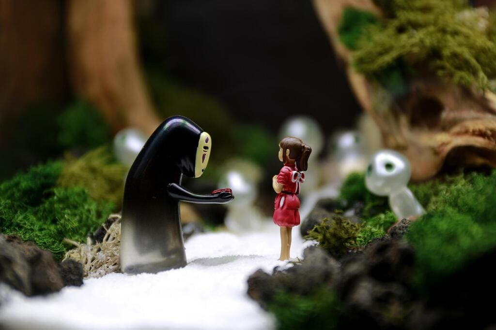
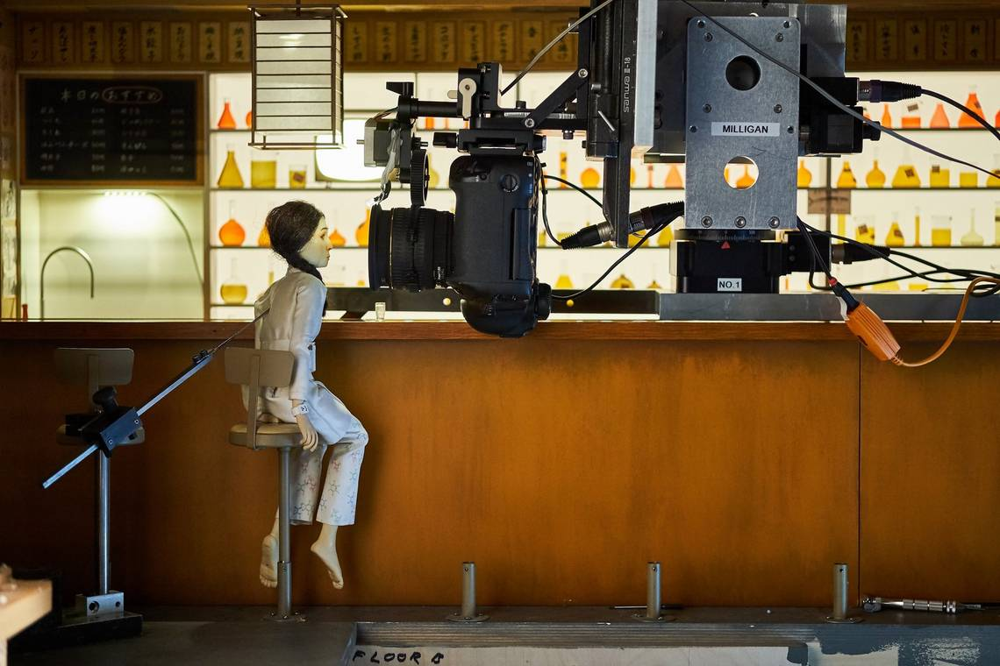
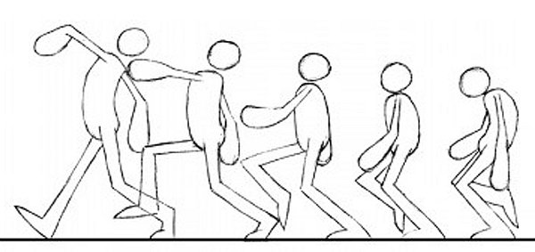
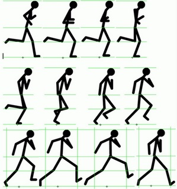
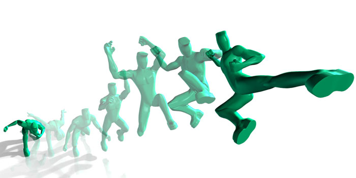
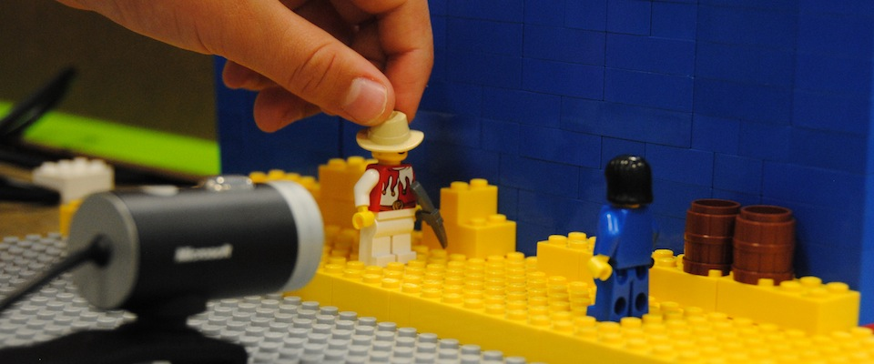
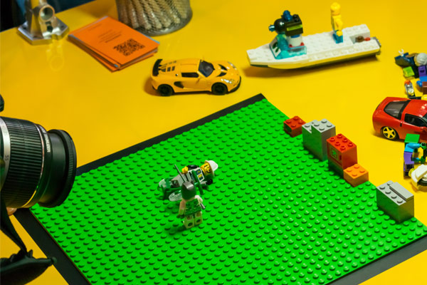
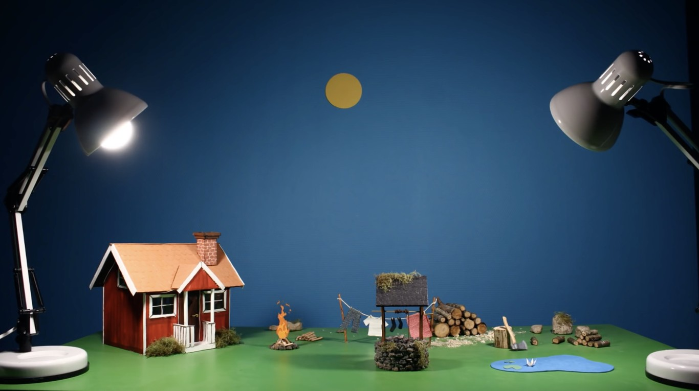
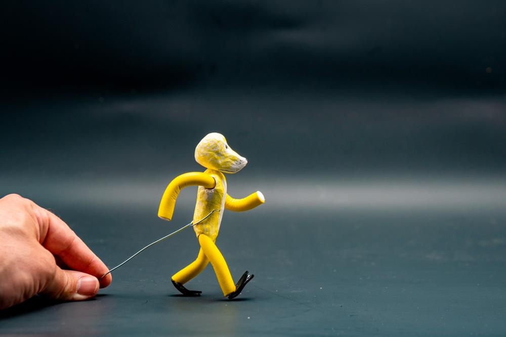

La animación stop motion es una técnica en la que los objetos utilizados en la escena se mueven físicamente en cada fotograma y se fotografían. Estas fotografías individuales se editan y se crean en una secuencia para crear una ilusión de movimiento. Se suele utilizar en dibujos animados, cortometrajes, anuncios y otros medios creativos.








